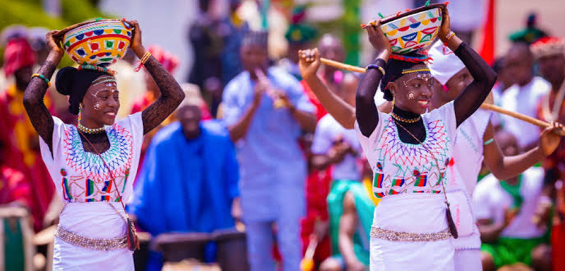

The Nigerian government in September 1988 launched the "National Cultural Policy." This policy document defined culture as "the totality of the way of life evolved by a people in their attempt to meet the challenges in their environment which gives order and meaning to their social, political, economic, aesthetic and religious norms and modes of organisation, thus distinguishing a people from their neighbour."
As a further step, the Federal Government in June 1999 created the Federal Ministry of Culture and Tourism. By mid 2006, the ministry was renamed Federal Ministry of Tourism, Culture and National Orientation, with the mandate to promote the nation's rich cultural heritage through the identification, development and marketing of its diverse cultural and tourism potentials. In November 2015, the Ministry of Culture and Tourism was later merged with the ministry of information, now known as the Ministry of Information, Culture and Tourism.
The culture of Nigeria is shaped by its multiple ethnic groups. The country has over 50 languages and over 250 dialects and ethnic groups. The three largest ethnic groups are the Hausa-Fulani who are predominant in the north, the Igbo who are predominant in the south-east, and the Yoruba who are predominant in the south-west. The Edo people are predominant in the region between Yoruba land and Igbo land. This group is followed by the Ibibio/Annang/Efik people of coastal south-eastern Nigeria and the Ijaw of the Niger Delta.

Nigeria's cultural diversity is one of its greatest strengths. With over 250 ethnic groups and more than 500 languages, the country's cultural mosaic is defined by a rich tapestry of traditions, practices and beliefs that span millennia. The Hausa-Fulani, Yoruba and Igbo are the three largest groups, but hundreds of other peoples — including the Tiv, Ibibio, Ijaw, Kanuri, Nupe, Urhobo and Edo — each bring distinct art forms, food traditions, governance systems and worldviews.
The rest of Nigeria's ethnic groups (sometimes called "minorities") are found all over the country but especially in the middle belt and north. The Hausa tend to be Muslim and the Igbo are predominantly Christian. The Efik, Ibibio and Annang people are mainly Christian. The Yoruba have a balance of members adherent to both Islam and Christianity, and indigenous beliefs are often blended with Christian practices. Despite this diversity, Nigerians are bound by common ties — a shared national identity, the English language, and a deep collective pride in what it means to be Nigerian. The National Cultural Policy affirmed that culture is central to national development.
Nigeria has one of Africa's richest literary traditions. Chinua Achebe's Things Fall Apart (1958) is considered one of the most important novels of the 20th century, having sold over 20 million copies worldwide and been translated into more than 57 languages. Wole Soyinka became Africa's first Nobel Laureate in Literature in 1986. Other internationally acclaimed writers include Ben Okri (Booker Prize winner, 1991), Chimamanda Ngozi Adichie, Helon Habila, Chris Abani and Teju Cole.
Nigerian theatre — both in English and indigenous languages — is vibrant and diverse. The Yoruba travelling theatre tradition, pioneered by Hubert Ogunde in the 1940s, helped shape a uniquely Nigerian dramatic art form that continues to thrive. Dance as a performing art is deeply embedded in Nigerian culture: from the acrobatic Atilogwu dance of the Igbo to the ceremonial Eyo masquerade of Lagos and the spectacular Durbar festivals of the north — each performance tradition carries centuries of history and meaning.
Nigerian cuisine is as diverse as its people. Jollof rice — one of West Africa's most celebrated dishes — is a staple at every social gathering. Other iconic dishes include egusi soup, pounded yam, suya (spiced grilled meat), moi moi, akara (bean fritters), ogbono soup, banga soup, ofada rice and pepper soup. Each region has its own signature specialities: the north is famous for tuwo shinkafa and kilishi; the south-west for amala and ewedu soup; and the south-east for ofe onugbu (bitter leaf soup) and oha soup.
Nigerian street food culture is vibrant, with boli (roasted plantain), suya stalls, akara sellers and fresh agege bread being iconic sights across the country. Nigeria's growing middle class and its dynamic diaspora have turned Nigerian gastronomy into a global brand, with Nigerian restaurants thriving in London, New York, Houston and across Europe. The annual Jollof Festival and other culinary events celebrate Nigeria's rich food heritage and its growing influence on global cuisine.
Nigerian arts and crafts encompass a rich tradition of weaving, pottery, bronze casting, woodcarving, beadwork, leatherwork and textile design. In architecture, the Hausa-Fulani adobe structures of northern Nigeria — particularly the decorated mud-brick buildings of Zaria, Kano and the old city of Katsina — represent a distinctive architectural heritage. The ornate carved wooden doors of the Yoruba, the elaborate compound walls of the Igbo and the decorated facades of Nupe architecture are further expressions of Nigerian artisanal mastery.
Traditional Nigerian art often serves functional, ceremonial and social purposes — carved doors, bronze plaques, beadwork crowns and woven textiles (such as the iconic aso-oke fabric of the Yoruba and the akwete cloth of the Igbo) are both artistic expressions and markers of identity, status and spiritual meaning. Nigeria's artisans continue to innovate within their traditions, producing works that are exported to collectors and cultural institutions worldwide, and commanding growing prices at international art auctions and fairs.
Contemporary Nigerian art has gained significant international recognition and commands growing prices at major auction houses. Ben Enwonwu — Nigeria's most celebrated modern artist — is best known for his Tutu series of portraits, one of which sold for $1.2 million at Bonhams London in 2018. Other titans of Nigerian modern art include Yusuf Grillo, Bruce Onobrakpeya and Twins Seven Seven, who established the foundations of contemporary Nigerian visual culture in the 1960s and 70s.
A new generation of Nigerian artists is now taking the global art world by storm: Njideka Akunyili Crosby, whose collaged paintings explore identity and belonging across cultures, has sold works for over $3 million; Toyin Ojih Odutola's intricate portrait drawings appear in the collections of MoMA and the Whitney Museum; and body-painter Laolu Senbanjo has collaborated with Beyoncé. Nigeria's contemporary art scene — centred in Lagos, Abuja and Port Harcourt — is nurtured by galleries, art fairs and creative collectives like Art X Lagos, connecting Nigerian artists to the global market.
Nigeria's musical heritage is extraordinarily rich and varied. Traditional music differs dramatically by region and ethnic group: the talking drum (gangan/dundun) is central to Yoruba ceremonial and social life; the kakaki (long ceremonial trumpet) heralds royal occasions in northern Nigeria; and the ogene gong and udu clay pot drum drive Igbo masquerade festivals. Indigenous dance traditions are equally diverse: the Etighi of the Ibibio, the Swange of the Tiv, the Atilogwu (acrobatic dance) of the Igbo and the Bata dance of the Yoruba each convey stories, values and spiritual meaning transmitted across generations.
The annual National Arts and Culture Festival (NAFEST) — held in rotating host states across Nigeria — brings together traditional musicians, dancers and craftspeople from all 36 states and the FCT to celebrate the country's diverse cultural heritage and promote national unity through the arts. The Argungu Fishing Festival in Kebbi State, the Eyo Festival in Lagos, the Osun-Osogbo Festival in Osun State and the Calabar Carnival in Cross River State are among the country's most spectacular annual cultural events, drawing tens of thousands of participants and visitors from across Nigeria and around the world.
Nollywood is the world's second-largest film industry by volume of output, producing over 2,500 films annually with a combined annual revenue exceeding $1 billion. Founded in the early 1990s with the home-video film Living in Bondage (1992), it has grown from low-budget productions into a sophisticated industry with major streaming distribution on Netflix, Amazon Prime Video and dedicated platforms like Africa Magic. Nigerian film-makers including Genevieve Nnaji (whose film Lionheart was Netflix's first original Nigerian acquisition), Kunle Afolayan and Kemi Adetiba are winning international acclaim and awards.
Afrobeats — pioneered by Fela Anikulapo-Kuti and King Sunny Ade, and evolved through the work of Wizkid, Burna Boy, Davido, Tiwa Savage, Tems and Asake — has become one of the dominant global sounds of the 21st century. Burna Boy won the Grammy Award for Best World Music Album in 2021 and Best African Music Performance in 2024. Nigerian music is now a major cultural and economic export, with Nigerian artists filling arenas and headlining festivals across Europe, North America, Asia and the rest of Africa, earning hundreds of millions of dollars in revenue annually.
Nigeria has developed one of Africa's most vibrant and commercially successful stand-up comedy scenes. Beginning in the 1990s with pioneers like Ali Baba — widely regarded as the father of corporate comedy in Nigeria — the industry has grown to include household names such as Basketmouth, Ayo Makun (AY), Bovi, Seyi Law, Gordons and Gbenga Adeyinka. These comedians have built multi-million dollar entertainment businesses combining live shows, television, film and brand partnerships.
The annual "Night of a Thousand Laughs" — conceived by Ali Baba and running for over 25 years — is arguably West Africa's biggest comedy show, attracting thousands of attendees and some of the biggest names in African entertainment. A new generation of digital-native Nigerian comedians — including Taaooma, Officer Woos and Sydney Talker — have amassed millions of followers on social media, taking Nigerian humour to global audiences through short-form video content, stand-up specials and feature films. Nigerian comedy has become a significant soft-power asset, projecting Nigeria's warmth, wit and resilience to the world.
Nigeria is a significant player on the international stage, maintaining a vast network of diplomatic missions worldwide.
See More